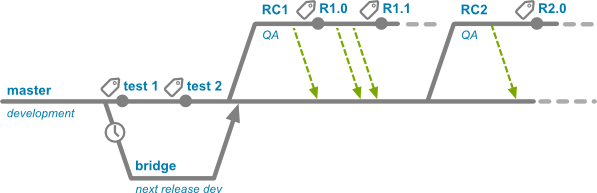
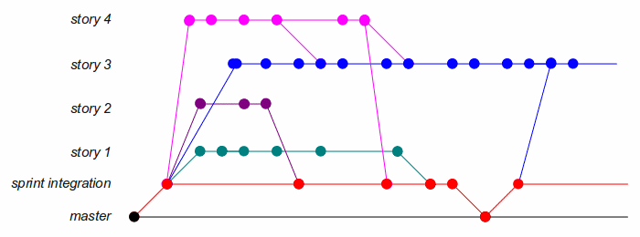

Git
Why Git
What Git
How Git
Why Git
Standard
どこでも通用する
| SVN | Git | Mercurial(念のため) | |
|---|---|---|---|
| SourceForge | ○ | ○ | ○ |
| OSDN | ○ | ○ | ○ |
| Bitbucket | × | ○ | ○ |
| Github | × | ○ | × |
より多くの活動に適応できるようになる
- Gitを利用する企業に倣う
- Gitを利用するOSSプロジェクトに参加する
Gitのほうが優れているの？
Love and Peace...
Subversion vs. Git: Myths and Facts https://svnvsgit.com/
Mercurial vs. Git: why Mercurial? https://www.atlassian.com/blog/software-teams/mercurial-vs-git-why-mercurial
Why Git?
仕事・活動の幅は確実に広がる！
１つより２つ使えたほうがいいよね？What Git
分散開発
なりたち
Linuxカーネルのソース管理に用いるために開発された。Linuxは多数のパッチを世界中のメンテナーがソースコードに適用するという形式が採用されている。 
分散開発
リポジトリ全体で1つのコミット
SVN: ファイル１つずつに更新履歴
Git: リポジトリ全体で１つの更新履歴
不便？デメリット？ファイル1つでもコミットできる
⇒自分のプログラム変更だけ終わったらコミットする
⇒既存の他のプログラムがエラーになる
⇒どのファイルのコミットでエラーになったかわからない
さぁ不具合の原因がわかったぞ！
あのファイルを古くして
このフォルダのうちこのファイルとこのファイルは最新のままでよくて
いつの間にか削除されたファイルを復元して

こんなLinux使いたい？
リポジトリ全体でコミット
⇒純粋なアプリケーションの世代管理
⇒コミット毎にプログラム全体を意識する
⇒プログラマの責任能力が向上する
さぁ不具合の原因がわかったぞ！
⇒コミットを取り除く（打ち消しコミットの作成）
⇒おわり
リポジトリ全体でコミット
コミット単位でアプリケーションが成り立つ
⇒コミットごとにテスト・ビルドができるんじゃね？
ようこそCIの世界へ・・・


What Git?
一人一人の能力を向上させる！
自動化を活用すれば一人一人の生産性も向上させる！How Git
先人に習へ
⇒ プラクティス
- Git Flow
- Github Flow
Git Flow
http://qiita.com/KosukeSone/items/514dd24828b485c69a05
Github Flow
developブランチのかわりに「Pull Request」を用いる
Pull Request：『こんな変更をしてみたので、ぜひあなたのプログラムに取り込んでください』
How Git?
世界中にプラクティスがある！
Gitに慣れてたら是非試してみましょう。まとめ
WHY GIT?
仕事・活動の幅は確実に広がる！
WHAT GIT?
一人一人の能力を向上させる！
HOW GIT?
世界中にプラクティスがある！
ちなみに・・・
このスライドもGit(hub)！
スライドのソース
https://github.com/kojisaiki/slide-why-git
スライド作成プログラム
reveal.js
https://github.com/hakimel/reveal.js/
おわり